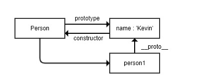

JavaScript深入之从原型到原型链到继承
原型和原型链
构造函数创建对象
我们先使用构造函数创建一个对象：
1 | |
在这个例子中，Person 就是一个构造函数，我们使用 new 创建了一个实例对象 person。说明：能用new实例化对象的函数就是构造函数。很简单吧，接下来进入正题：
prototype
每个函数都有一个 prototype 属性，就是我们经常在各种例子中看到的那个 prototype ，比如：
1 | |
那这个函数的 prototype 属性到底指向的是什么呢？是这个函数的原型吗？
其实，函数的 prototype 属性指向了一个对象，这个对象正是调用该构造函数而创建的实例的原型，也就是这个例子中的 person1 和 person2 的原型。
那什么是原型呢？你可以这样理解：每一个JavaScript对象(null除外)在创建的时候就会与之关联另一个对象，这个对象就是我们所说的原型，每一个对象都会从原型"继承"属性。
让我们用一张图表示构造函数和实例原型之间的关系：
在这张图中我们用 Object.prototype 表示实例原型。
那么我们该怎么表示实例与实例原型，也就是 person 和 Person.prototype 之间的关系呢，这时候我们就要讲到第二个属性：
proto
这是每一个JavaScript对象(除了 null )都具有的一个属性，叫__proto__，这个属性会指向该对象的原型。
为了证明这一点,我们可以在火狐或者谷歌中输入：
1 | |
于是我们更新下关系图：
既然实例对象和构造函数都可以指向原型，那么原型是否有属性指向构造函数或者实例呢？
constructor
指向实例倒是没有，因为一个构造函数可以生成多个实例，但是原型指向构造函数倒是有的，这就要讲到第三个属性：constructor，每个原型都有一个 constructor 属性指向关联的构造函数。
为了验证这一点，我们可以尝试：
1 | |
所以再更新下关系图：

综上我们已经得出：
1 | |
了解了构造函数、实例原型、和实例之间的关系，接下来我们讲讲实例和原型的关系：
实例与原型
当读取实例的属性时，如果找不到，就会查找与对象关联的原型中的属性，如果还查不到，就去找原型的原型，一直找到最顶层为止。
举个例子：
1 | |
在这个例子中，我们给实例对象 person 添加了 name 属性，当我们打印 person.name 的时候，结果自然为 Daisy。
但是当我们删除了 person 的 name 属性时，读取 person.name，从 person 对象中找不到 name 属性就会从 person 的原型也就是 person.__proto__ ，也就是 Person.prototype中查找，幸运的是我们找到了 name 属性，结果为 Kevin。
但是万一还没有找到呢？原型的原型又是什么呢？
原型的原型
在前面，我们已经讲了原型也是一个对象，既然是对象，我们就可以用最原始的方式创建它，那就是：
1 | |
其实原型对象就是通过 Object 构造函数生成的，结合之前所讲，实例的 __proto__ 指向构造函数的 prototype ，所以我们再更新下关系图：
原型链
那 Object.prototype 的原型呢？null，我们可以打印：
1 | |
然而 null 究竟代表了什么呢？null 表示“没有对象”，即该处不应该有值。
所以 Object.prototype.__proto__ 的值为 null 跟 Object.prototype 没有原型，其实表达了一个意思。所以查找属性的时候查到 Object.prototype 就可以停止查找了。
最后一张关系图也可以更新为：
顺便还要说一下，图中由相互关联的原型组成的链状结构就是原型链，也就是蓝色的这条线。
补充
最后，补充三点大家可能不会注意的地方：
constructor
首先是 constructor 属性，我们看个例子：
1 | |
当获取 person.constructor 时，其实 person 中并没有 constructor 属性,当不能读取到constructor 属性时，会从 person 的原型也就是 Person.prototype 中读取，正好原型中有该属性，所以：
1 | |
proto
其次是 __proto__ ，绝大部分浏览器都支持这个非标准的方法访问原型，然而它并不存在于 Person.prototype 中，实际上，它是来自于 Object.prototype ，与其说是一个属性，不如说是一个 getter/setter，当使用 obj.__proto__ 时，可以理解成返回了 Object.getPrototypeOf(obj)。
真的是继承吗？
最后是关于继承，前面我们讲到“每一个对象都会从原型‘继承’属性”，实际上，继承是一个十分具有迷惑性的说法，引用《你不知道的JavaScript》中的话，就是：
继承意味着复制操作，然而 JavaScript 默认并不会复制对象的属性，相反，JavaScript 只是在两个对象之间创建一个关联，这样，一个对象就可以通过委托访问另一个对象的属性和函数，所以与其叫继承，委托的说法反而更准确些。
继承
原型链继承
1 | |
画个图表示一下：
问题：
1.引用类型的属性被所有实例共享，举个例子：
1 | |
2.在创建 Child 的实例时，不能向Parent传参
借用构造函数(经典继承)
1 | |
再来一张图：
优点：
- 避免了引用类型的属性被所有实例共享
- 可以在
Child中向Parent传参
举个例子：
1 | |
缺点：
方法都在构造函数中定义，每次创建实例都会创建一遍方法。
组合继承
原型链继承和经典继承双剑合璧。
1 | |
再来一张图：
组合继承最大的缺点是会调用两次父构造函数。
一次是设置子类型实例的原型的时候：
1 | |
一次在创建子类型实例的时候：
1 | |
回想下 new 的模拟实现，其实在这句中，我们会执行：
1 | |
在这里，我们又会调用了一次 Parent 构造函数。
所以，在这个例子中，如果我们打印 child1 对象，我们会发现 Child.prototype 和 child1 都有一个属性为colors，属性值为['red', 'blue', 'green']。
那么我们该如何精益求精，避免这一次重复调用呢？
如果我们不使用 Child.prototype = new Parent() ，而是间接的让 Child.prototype 访问到 Parent.prototype 呢？
原型式继承
1 | |
就是 ES5 Object.create 的模拟实现，将传入的对象作为创建的对象的原型。
缺点：
包含引用类型的属性值始终都会共享相应的值，这点跟原型链继承一样。
1 | |
再来一张图：
注意：修改person1.name的值，person2.name的值并未发生改变，并不是因为person1和person2有独立的 name 值，而是因为person1.name = 'person1'，给person1添加了 name 值，并非修改了原型上的 name 值。
寄生式继承
创建一个仅用于封装继承过程的函数，该函数在内部以某种形式来做增强对象，最后返回对象。
1 | |
缺点：跟借用构造函数模式一样，每次创建对象都会创建一遍方法。
寄生组合式继承
预备了上面这俩方法，就是为了引出寄生组合式继承，从而克服组合继承。
看看如何实现：
1 | |
再来一张图：
最后我们封装一下这个继承方法：
1 | |
最后来一张图：
引用《JavaScript高级程序设计》中对寄生组合式继承的夸赞就是：
这种方式的高效率体现它只调用了一次 Parent 构造函数，并且因此避免了在 Parent.prototype 上面创建不必要的、多余的属性。与此同时，原型链还能保持不变；因此，还能够正常使用 instanceof 和 isPrototypeOf。开发人员普遍认为寄生组合式继承是引用类型最理想的继承范式。
总结
原型和原型链以及继承就先介绍这么多，后续如果有写错的地方还待检查和修改:D
本博客所有文章除特别声明外，均采用 CC BY-SA 4.0 协议 ，转载请注明出处！